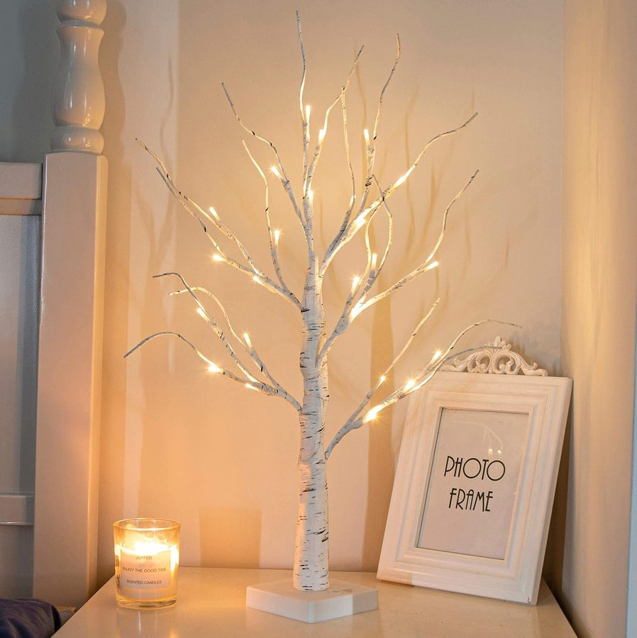

EAMBRITE, el abedul de 60 cm para mesa
Es un arbolito de aspecto abedul, de 60 cm de alto y con una base de 10 × 10 cm, pensado para una mesa o un rincón reducido. La ficha indica 24 luces LED de blanco cálido, ramas flexibles y un interruptor en la parte superior de la base. Se puede alimentar con 3 pilas AA, que no vienen en la caja, o por USB, con el cable incluido. También declara un temporizador de 6 horas y 18 horas. No es un pino clásico ni viene con bolas: es una lámpara con forma de árbol, útil si el espacio no da para más. La ficha no habla de mando a distancia (cuando aparece la palabra «mando» en la página, es de otros productos relacionados).
14,99 €Amazon.es · vendido por Dilatto International y enviado por Amazon · entrega anunciada el jueves 19 de noviembre · en stock
Medidas declaradas: 60 cm de alto, base de 10 × 10 cm. 24 LED de blanco cálido. No hemos comprobado este modelo en otra tienda española.